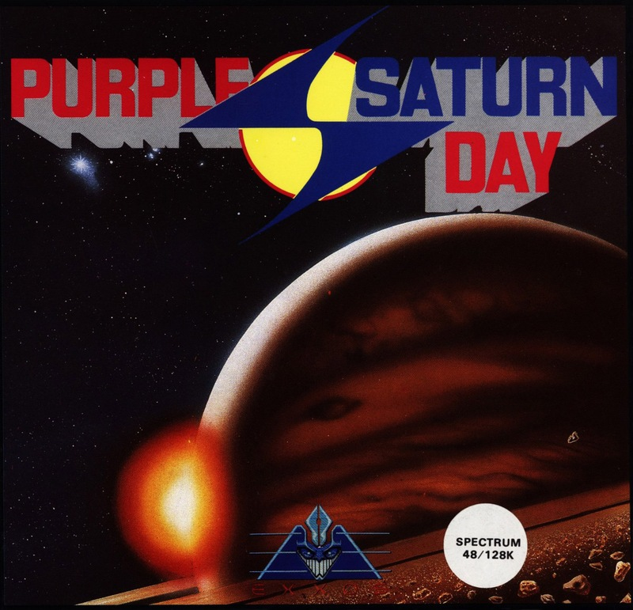
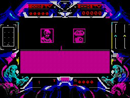

Purple Saturn Day


{kind=link}

| Publisher: | Exxos |
| Price: | £9.99 Cass, £14.99 Disk |
| Year: | 1989 |
| Source: | CRASH, Issue 71 |

Purple Saturn Day? Sounds like a colourful day out with Patrick Moore! It isn’t though: it’s a really brill and triff new game from the people who brought you Captain Blood. It’s been a long wait for the Spectrum version, but well worth it.
Imagine the Olympic Games, then shoot a couple of hundred years into the future and this is what they will look like. You are the only human competitor in these Intergalactic Games and your ambition is to beat all alien mutations to the ultimate prize — a kiss from the Purple Saturn Queen (shlurp!).

You compete in four events, in any order you choose, aiming for the highest score on each to qualify for the next round. The events have changed in the course of centuries: no usual boring high jump, pole vault and running. This is the space age!
Ring Pursuit is a slalom style event set in the rings of Saturn. Get your space craft to dodge left of the yellow markers, right of the red markers or plough straight into the rocks if you can’t steer. Tronic Slider is undoubtedly the worst event. You have to trundle up and down the play area shooting energy balls and collecting the dropping fragments. What’s frustrating about this one is that you keep bumping into inconveniently placed bollards, giving your competitor the chance to pick up your bits (the scoundrel).
Brain Bowler is my favourite and also happens to be the most complicated of the quartet. It’s a bit like being an electrician really. You have to stick electricity through a circuit and get the currents to go to the right places by opening and closing switches. This would be easy if it weren’t for your opponent who keeps nicking your currents and undoing all your hard work. it sounds complicated but once you’ve played its couple of times you get the idea. The last event is Time Jump in which you have to collect as much energy as possible to jump into the future and score trillions of points.
All the graphics, music and effects in the game are of the highest standard and there’s oodles of colour everywhere. Purple Saturn Day takes a bit of getting into but if you persevere you will soon discover a great game.
NICK — 90%
Coo, this is the first time I’ve ever competed in the Galactic Olympics. Purple Saturn Day from Exxos is finally here. Out of the four events Tronic Slider is the weakest in content, but the other three, Ring Pursuit, Brain Bowler and my personal favourite Time Jump more than compensate. The game is graphically very good with colourful, nicely defined sprites (especially impressive are the players’ ‘hands’ on the cockpit controls) combining well with the pleasant title tune. If you want a fast and frenetic game that requires a fair amount of brain power, take a look at Purple Saturn Day.
MARK — 90%
RATING
A challenging variant on Earth-bound Olympics games.
| Presentation: | 89% |
| Graphics: | 88% |
| Sound: | 84% |
| Playability: | 87% |
| Addictivity: | 88% |
| Overall: | 91% |